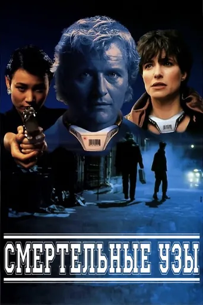

Смертельные узы 1991
Фрэнк Уоррен (Хауэр), его любовница Ноэль (Чен) и лучший друг Сэм (Ремар) совершают дерзкое, но тщательно продуманное ограбление международного торгового центра, похитив бриллианты на многие миллионы долларов. При уходе с места ограбления Фрэнк был ранен своими же подельниками и попал в руки полиции, но "камушки" успел спрятать. Фэрнка помещают в тюрьму, где нет ни стен, ни решеток, но на каждого заключенного надевается электронный ошейник, подключенный к ошейнику другого заключенного. Никто не знает своей пары, и стоит отойти друг от друга далее, чем на 100 метров, как взрывается бомба, вмонтированная в ошейник. Фрэнку удается найти свою пару, бежать они решаются вместе. По следам беглецов устремляются предатели, рассчитывающие выйти на спрятанные бриллианты, и... директор тюрьмы, организовавший побег.
Открыть в каталогеДанные и постеры принадлежат их правообладателям. Этот продукт использует TMDB API, но не одобрен и не сертифицирован TMDB.